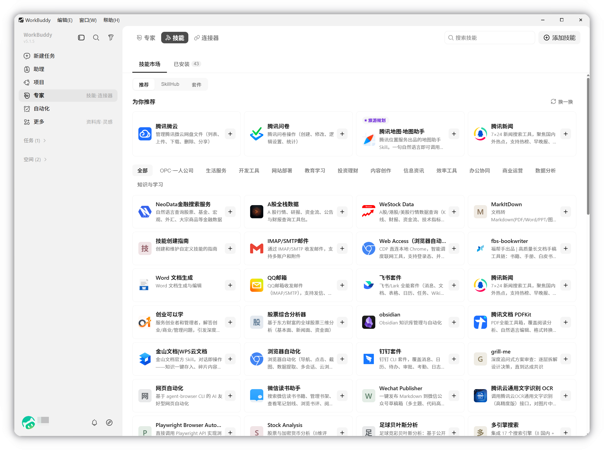
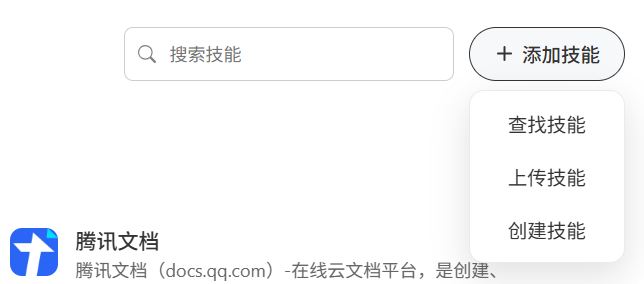
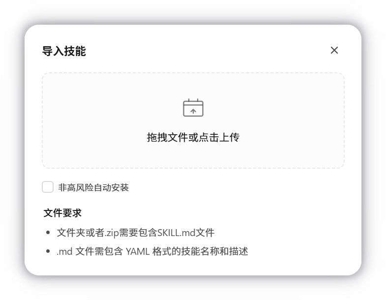
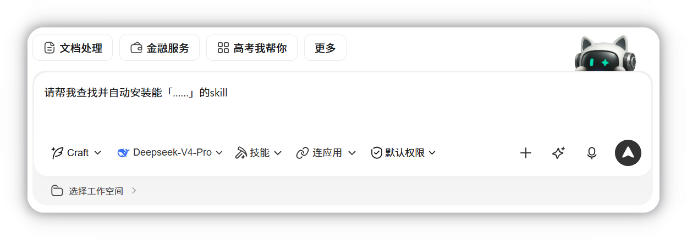
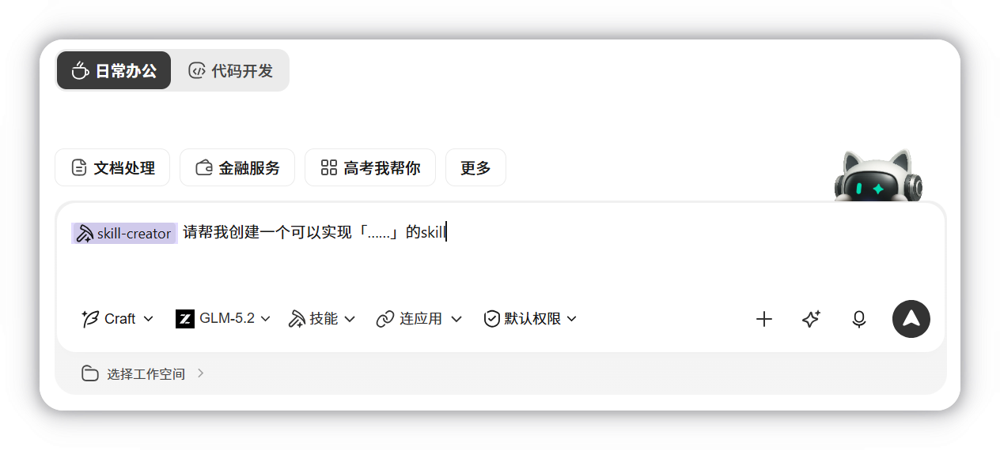
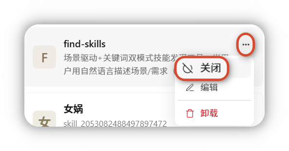
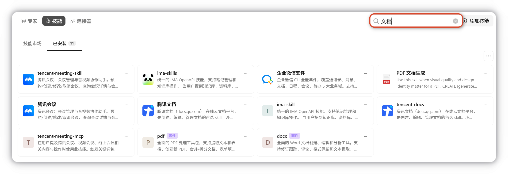
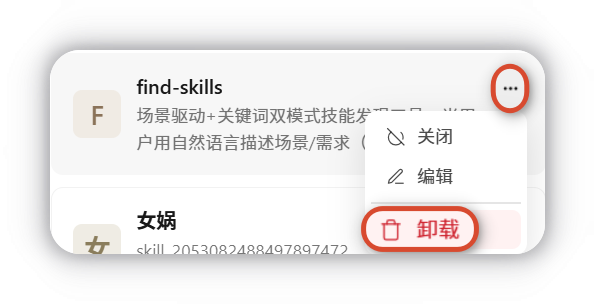
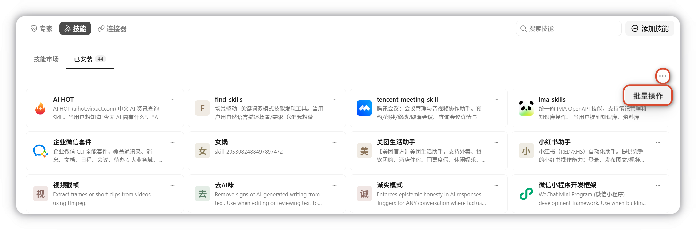
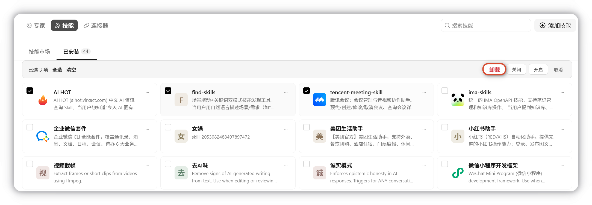

技能
配置技能能够扩展 WorkBuddy 的能力范围，赋予 WorkBuddy 更强大的能力。
概述
技能（Skill） 为 WorkBuddy 增加「特定工具能力」—— 封装一组可执行的脚本与工作流，使 AI 在您的授权下完成具体动作（如发送邮件、订外卖、查询股价、读写文件、调用第三方 API 等）。
Skill 可能根据其能力与指令使用信息收集与使用中提到的任意数据，也可能将您的输入内容发往第三方。建议优先使用官方推荐 Skill；安装第三方 Skill 前请审慎校验来源、权限申请与脚本内容。
页面概览
技能板块分为两个内容：
| 区域 | 内容 |
|---|---|
| 技能市场 | 推荐技能，可按需一键安装 |
| 已安装 | 已安装的本地技能，可直接在对话中调用 |

如何使用技能（Skill）
安装技能
点击添加技能通过导入本地技能包或向WorkBuddy描述任务需求查找和创建技能：

- 上传技能：导入本地技能包安装。选择上传技能，拖拽或点击 选择文件，选中本地技能包即可完成导入。

导入后系统将自动完成配置，无需额外操作。
- 查找技能：选择查找技能，输入任务描述，WorkBuddy将自动查找相关技能。

- 创建技能：选择创建技能，输入任务描述，WorkBuddy将自动创建相关技能。

启用 / 关闭技能
已安装技能支持随时关闭或重新启用，无需卸载。关闭后该技能不会在对话中被调用。

建议
仅启用当前任务所需的技能，减少无关干扰并降低误调用概率。
搜索技能
技能较多时，通过搜索框输入关键词可快速定位目标技能。

卸载技能
需要在本机完全卸载技能时，可选择卸载技能：

支持批量操作卸载：


注意事项与重点提示
信息收集与使用
可能涉及的信息（视 Skill 而定）： 账户身份信息、联系方式、用户输入内容、使用行为日志、第三方平台凭证、本地文件读写、屏幕与输入控制权限。
实际范围
以您安装与启用 Skill 时所授权的能力为准；同一 Skill 在不同任务下可能仅使用其中一部分。
积分消耗提醒
涉及复杂的任务和复杂的 Skill 时，积分消耗通常较高。
第三方共享
使用部分 Skill 时可能将输入内容发往第三方（如订外卖、查股票、向 IM 发送消息等）。
安全提示
非官方 Skill 可能存在恶意提示词注入、越权访问、后门程序等隐患，请优先使用官方推荐 Skill。
使用建议
- 安装第三方 Skill 前，请仔细查看其权限申请、来源说明与脚本内容，确认数据外发范围与可信度。
- Skill 调用第三方、修改本地文件、执行系统命令时，均以您本人身份执行；涉及文件删除、批量写入、系统配置变更或资金类操作时，建议先在小范围验证后再放大使用。
- 若 Skill 与第三方服务交互过程出现异常或纠纷，请直接联系该 Skill 提供方或对应第三方客服处理。